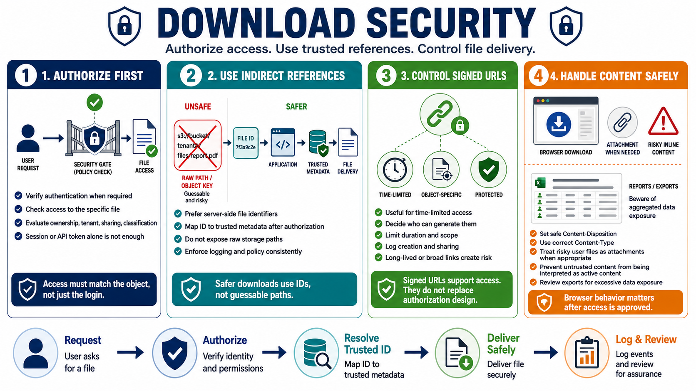

Secure File Download and Sharing
Connecting to LMS... Progress: in progress

Narration
Download security starts with authorization. Before returning a protected file, the application should verify that the caller is authenticated when required and allowed to access that specific object. Ownership, tenant context, sharing permissions, classification, expiration, and workflow state may all matter. A valid session or API token is not enough if the caller is requesting a file that belongs to someone else.
Indirect references are safer than exposing raw storage paths. A download URL can reference a server-side file identifier, and the application can map that identifier to trusted storage metadata after authorization. This reduces the chance that a user can change a path or object key to reach a different file. It also lets the application log and enforce download policy consistently.
Signed URLs can be useful for time-limited access to a specific resource under controlled conditions. They are not a replacement for authorization design. The system should decide who can create a signed URL, how long it lasts, what object it covers, whether it can be reused, and how sharing is logged. Long-lived or overly broad signed links can become uncontrolled access paths.
Content-Disposition and Content-Type affect how browsers handle downloads. Some content should be treated as an attachment rather than displayed inline, especially when it is user-supplied. Safe content type handling reduces the chance that a browser interprets untrusted content as active HTML, script, or another risky format. Export features should also be reviewed for excessive data exposure because generated files often aggregate more fields than normal screens show.